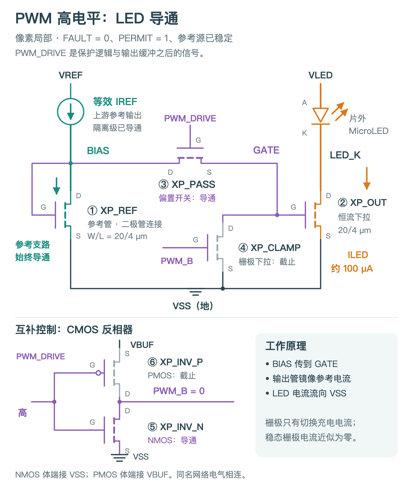
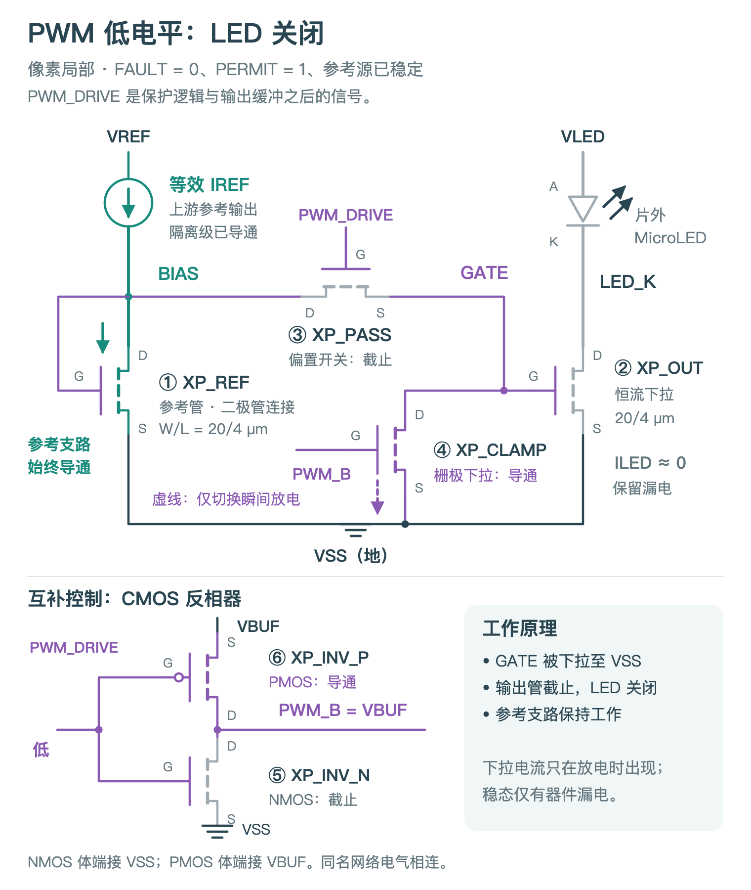

把 BIAS 电压送到输出管的栅极
反相器使 PWM_B 为低电平。③ XP_PASS 导通，④ XP_CLAMP 截止；② XP_OUT 的栅极获得偏置，形成从片外 MicroLED 到 VSS 的电流通路。
① XP_REF 与②输出管组成 1∶1 电流镜。图中约 100 µA 是当前设计的标称工作点；实际电流还受参考源、器件和输出电压余量影响。
OPEN MICROLED DRIVER ASIC · BLENDER 教学动画
先把金属层与通孔逐层展开，再找到同一组六只 MOS。最后跟着 PWM 高、低电平，分清 LED 电流、参考电流，以及只在切换时出现的栅极充放电。
动画演示正常工作条件：FAULT = 0、PERMIT = 1，参考源已经稳定。PWM_DRIVE 是保护逻辑与输出缓冲之后的有效信号；这里的 PWM 低电平不是故障保护关断。
约 64 秒 · 点击播放，或用下方按钮从指定章节开始。建议全屏观看，随时暂停核对器件编号。
当前是 39 MOS 模拟宏。接下来展开图层，再定位其中六只像素 MOS。
版图中的紫色 GATE 虚线表示连接；只有边沿时运动的标记表示充放电。BIAS、VSS 向左仍延续到画面之外，不在裁切边缘终止。
反相器使 PWM_B 为低电平。③ XP_PASS 导通，④ XP_CLAMP 截止；② XP_OUT 的栅极获得偏置，形成从片外 MicroLED 到 VSS 的电流通路。
① XP_REF 与②输出管组成 1∶1 电流镜。图中约 100 µA 是当前设计的标称工作点；实际电流还受参考源、器件和输出电压余量影响。
反相器使 PWM_B 为高电平。③传递管截止，④下拉管导通；栅极储存的电荷释放后，②输出管关闭，LED 支路只剩漏电。
参考支路仍在工作。④导通后持续保持低电位，但栅极不是直流负载：紫色运动仅在下降沿放电、上升沿充电时出现，稳态栅极电流近似为零。
切换片段把栅极充放电放慢演示，并用两张稳态原理图说明切换前后的关系。真实反相器有传播延迟，输出管电流也不会瞬间跳变；传递管与下拉管的重叠导通、LED 尾电流和开关延迟，需要用瞬态仿真波形判断，不能从动画秒数读取。
六只 MOS 的编号、实例名与动画版图一致。电流源符号等效表示上游参考电路；参考源、隔离级、保护逻辑及缓冲器在这张像素局部图中省略。LED 位于芯片之外。
右侧版图在①参考管的左下方，还露出邻近的 LED 保护钳位管 XC_CP。它不属于编号①—⑥；在本动画的正常条件下保持关闭，因此没有画出其导通路径。普通 PWM 低电平与故障保护关断是不同状态。


D 是漏极、G 是栅极、S 是源极、B 是体端。下表遵循实际网表的 D / G / S / B 顺序；同名节点在电气上相连，不要求它们在图上相邻。
| 编号 | 器件与作用 | D / G / S / B |
|---|---|---|
| ① | XP_REFNMOS · 二极管连接参考管 | BIAS / BIAS / VSS / VSS |
| ② | XP_OUTNMOS · LED 恒流下拉输出管 | LED_K / GATE / VSS / VSS |
| ③ | XP_PASSNMOS · 传递栅极偏置，不串在 LED 主电流中 | BIAS / PWM_DRIVE / GATE / VSS |
| ④ | XP_CLAMPNMOS · 放掉 GATE 电荷，并保持低电位 | GATE / PWM_B / VSS / VSS |
| ⑤ | XP_INV_NNMOS · 反相器下拉管 | PWM_B / PWM_DRIVE / VSS / VSS |
| ⑥ | XP_INV_PPMOS · 反相器上拉管 | PWM_B / PWM_DRIVE / VBUF / VBUF |
体端也需要真实接触和连线：NMOS 的 P 型体区通过体接触固定到 VSS；PMOS 的 N 阱通过井接触固定到 VBUF。这与 D、S 端的工作电流连接不同。XP_PASS 的 S 接 GATE、B 接 VSS，不能把这两个端子误画成短接。
Contact（接触孔）把扩散区或多晶硅栅极连接到第一层金属 M1；两者起始高度不同。井接触也依靠接触孔把体区电位引出来。
Via1 连接 M1 与 M2，Via2 连接 M2 与 M3。两条不同层的金属在平面上交叉，不代表已经接通；要看交叉处是否存在对应通孔。
模型的 X、Y 平面图形来自实际 GDS。垂直方向按名义层高放大 12 倍；井、有源区的表现用于辨认图层，不代表掺杂深度。
动画又额外拉开了各层，让接触关系更清楚。展开空隙不是真实层间距，也不是空气层。图层颜色用于识别结构；只有叠加的橙、青绿、紫路径承担电流与控制的解释。
这是基于实际版图与网表的结构、连接和工作状态演示。运动方向采用常规电流方向；箭头的速度、宽度和 64 秒教学时间都不代表真实电子速度、电流大小或 SPICE 时间，也不是电场、热场或制造过程仿真。
箭头由实际三维连接中心线投影到固定相机，属于教学标注。编辑 Blender 相机后，需要重新执行投影脚本；现有箭头不能随视角旋转而被当作真实三维流线。
复核包含 102 项模型检查：9,074 个多边形与源 GDS 的 X、Y 坐标在 1 nm 量化下相符，并检查全部 1,536 帧的路径显示状态。字体和原理图已打包到 Blender 文件中。这些检查针对模型与动画表达，不是新增电气验证。
当前完整对象是 39 MOS 模拟宏，动画重点解释其中六只像素 MOS。实际 DRC、LVS、PEX 与电气结果请结合单像素研究报告阅读；动画本身不新增硅片或光学实测证据。
补充核对：原理图连接与图像检查 · 视频与文件校验 · 中文字幕文本 · 动画字体许可
场景使用 Blender 4.5.11 LTS。打开模型后，按空格播放时间轴；画面含固定相机标注，建议保留相机观看。图层是独立 Mesh，可在 Outliner 中查看。需要自由旋转研究结构时，可打开前一版三维几何模型。
仓库中的 scripts/blender_animation/prepare_mapping.py 核对网表及真实几何，schematic.py 生成原理图，build.py 生成动画，validate.py 独立重开模型复核，finalize.py 校验最终视频并打包证据。原始逐帧输出保存在 build/blender-pwm-animation/frames，紧凑证据保存在 evidence/blender-pwm-animation。
再次启动本地观看服务：在仓库根目录运行 build/layout/venv/bin/python scripts/blender_animation/serve.py，再打开本页的 localhost:8771 地址。该服务支持 MP4 的 HTTP Range 请求，供拖动进度和章节跳转使用。